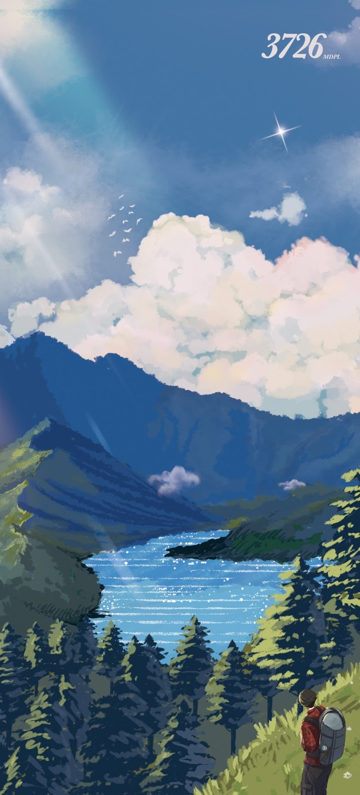

Aku Kamu Dan Bandung
Menceritakan tentang kisah dua insan yang dipertemukan di keindahan kota Bandung dengan segala kenangannya.
Menceritakan tentang kisah dua insan yang dipertemukan di keindahan kota Bandung dengan segala kenangannya.

Ikuti petualangan mendebarkan sekelompok pendaki menaklukkan puncak gunung tertinggi yang penuh misteri.